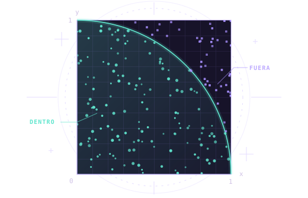

Simulación de sistemas Semana 07
Muchos intentos.Una mejor idea.
Aprende Monte Carlo desde cero: genera puntos, simula días de un hospital y explora qué podría pasar con $1.000. Cambia los datos y descubre cómo muchos intentos ayudan a estimar y decidir.
- 04 experimentos
- 100.000 muestras por corrida
- 20 preguntas
EXPERIMENTO 01GEOMETRÍA / 2D

01 Experimentos
Laboratorio interactivo
Cuatro problemas, un mismo método: generar al azar, repetir y resumir. Cada ejemplo explica qué se simula y para qué sirve.
Entender antes de simular
Como calcular el área de un lago
0 / 1.000 muestras
Cuadrado unidadX, Y ∈ [0, 1]
Cada punto se evalúa con la regla x² + y² ≤ 1.
- Estimación
- —
- Referencia
- 3,141593
- Error absoluto
- —
- Error estándar est.
- —
| Resultado | Casos | Porcentaje |
|---|
Cómo se obtiene el resultado
π̂ = 4 × C / N
C cuenta los puntos que cumplen x² + y² ≤ 1.
Mismos días y misma semilla; solo cambia la capacidad de atención.
¿Qué reglas usa este ejemplo?
Inspeccionar las últimas muestras
La tabla redondea los números. La evaluación usa los valores originales.
| # | Punto (x, y) | x² + y² | Aporta |
|---|---|---|---|
| Genera muestras para ver el detalle. | |||
Guion para exponer. 1. Explica qué queremos saber. 2. Identifica qué cambia al azar. 3. Simula 10.000 intentos. 4. Lee las barras y la conclusión. 5. Cambia un dato y explica por qué cambia el resultado.
02 Fundamentos
Del azar a la respuesta
Monte Carlo es una familia de métodos que usa muestras aleatorias repetidas para aproximar cantidades como una probabilidad, un área o una integral.
- 01
Define
Elige la cantidad que quieres estimar y el modelo que la conecta con el azar.
- 02
Muestrea
Genera N muestras de la distribución del modelo. En π, cada coordenada es uniforme en [0, 1].
- 03
Evalúa
Aplica una regla a cada muestra. Por ejemplo, asigna 1 si un punto cae dentro y 0 si cae fuera.
- 04
Resume
Promedia las evaluaciones y aplica el factor de escala del problema cuando corresponda.
La idea, sin fórmulas complicadas
Ensayar muchas posibilidades para estimar una respuesta
Imagina un lago irregular dentro de un rectángulo. Si el 73 % de muchos puntos uniformes cae en el lago, estimamos que ocupa el 73 % del área del rectángulo. En el hospital contamos días con sobrecarga; en la inversión, escenarios con pérdidas. Cambia la pregunta, pero conservamos el mismo método.
Probabilidad estimada = casos que nos interesan ÷ total de intentos. Para expresarla como porcentaje, multiplicamos por 100. N es el número total de intentos; la semilla permite repetir la secuencia.
🏥 ¿Cómo leer 10.000 días de hospital?
Supongamos que 6.000 días tienen margen de capacidad, 3.000 muestran presión y 1.000 superan la capacidad.
Conclusión: en este ejemplo hay sobrecarga en 1 de cada 10 días simulados. Comparar la misma demanda con más médicos permite estudiar si hace falta reforzar la atención.
Estos conteos enseñan a leer un resultado. El laboratorio calcula sus propios porcentajes según tus datos; no está programado para repetir 60/30/10.
Simular el hospital💰 ¿Qué podría pasar con $1.000?
Supongamos que, al cabo de un año, 3.000 escenarios pierden dinero, 4.500 quedan entre $0 y $150 de ganancia (incluye quedar igual) y 2.500 ganan más de $150.
Conclusión: la categoría más frecuente es ganar de $0 a $150, pero también hay pérdidas. Monte Carlo muestra posibilidades y su frecuencia dentro del modelo; no asegura una ganancia.
Cifras hipotéticas para explicar. El modelo interactivo no usa cotizaciones reales ni predice rentabilidad; excluye comisiones, impuestos e inflación.
Simular la inversión¿Qué hace la semilla?
Un generador pseudoaleatorio usa una regla y un estado inicial. La semilla determina ese estado. En la web, el mismo modelo y la misma semilla producen la misma secuencia, lo que permite comparar tamaños partiendo de las mismas muestras. Para comparar corridas distintas, cambia la semilla. La teoría idealiza las muestras como independientes.
↗ Precisión
Más muestras, menos dispersión
Para el promedio de muestras independientes con varianza finita, el error estándar es σ/√N. Multiplicar N por cuatro reduce a la mitad esa escala de variación. El error absoluto de una corrida puede subir o bajar al agregar muestras.
- Error absoluto
- |estimación − referencia|. Lo mostramos en π y volumen porque conocemos sus referencias. En hospital e inversión no conocemos el resultado real futuro.
- Error estándar estimado
- s/√N, con s igual a la desviación muestral de los aportes, incluida la escala. Con una sola muestra queda sin estimar. Si los aportes observados son idénticos, s vale cero en esa corrida.
- Sesgo
- Una diferencia sistemática frente al objetivo. Con un muestreo inadecuado, la estimación puede estabilizarse cerca de un valor equivocado.
Experimento de precisión
Repetir la estimación de π
Compara el error típico observado (RMSE) con el valor teórico. Las corridas son reproducibles y usan muestreo uniforme.
| Muestras | Observado | Teórico |
|---|---|---|
| Pulsa «Comparar corridas» para calcular la tabla. | ||
El RMSE es la raíz del promedio de los errores al cuadrado.
¿Cuándo sirve y cuándo conviene otra opción?
Monte Carlo es útil cuando podemos simular un caso, pero estudiar todas las combinaciones o resolver una fórmula exacta resulta difícil. Si ya existe una fórmula sencilla, suele ser mejor usarla: aquí conocemos π y el volumen de la esfera para comprobar el método. En el hospital y la inversión no conocemos el futuro; obtenemos estimaciones condicionadas a nuestros supuestos.
Más muestras reducen la variación por azar; no corrigen datos malos ni un modelo equivocado. Una simulación puede estabilizarse y seguir equivocada si sus reglas representan mal el problema.
¿Dónde se usa?
- MedicinaSimular trayectorias de fotones y su detección en imágenes de emisión.[4]
- ElectrónicaEstimar la confiabilidad de dispositivos de potencia bajo un modelo de fallas.[5]
- SeñalesEstimar parámetros a partir de mediciones ruidosas, por ejemplo en localización.[6]
- Física y calorAproximar soluciones de ecuaciones de difusión con trayectorias aleatorias.[7]
- Gráficos 3DMuestrear contribuciones de luz para estimar el color de los píxeles.[8]
↶ Un poco de historia
Una idea de 1946 que creció con las computadoras
El muestreo estadístico ya existía. En Los Álamos se desarrolló su forma moderna para resolver problemas mediante muchos ensayos aleatorios.
Contar partidas en vez de resolverlas todas
Stanislaw Ulam, mientras jugaba al solitario durante una convalecencia, pensó en estimar la probabilidad de ganar repitiendo muchas partidas. Desarrolló la idea con John von Neumann para aplicarla a problemas científicos.
Fuente: Los Alamos National Laboratory ↗La computadora permite repetir miles de ensayos
Las primeras simulaciones de Monte Carlo en ENIAC se ejecutaron en abril y mayo de 1948 para estudiar el transporte de neutrones. Klara von Neumann y Nicholas Metropolis participaron en la programación. La computadora permitía repetir cálculos que habrían sido muy laboriosos a mano.
Fuente: investigadores de Los Álamos ↗El método se presenta públicamente
Nicholas Metropolis y Stanislaw Ulam publicaron «The Monte Carlo Method» en la revista de la Asociación Estadounidense de Estadística. Ulam, von Neumann, Metropolis y sus colaboradores fueron figuras centrales de este desarrollo.
Leer la publicación original ↗¿Por qué «Monte Carlo»?
Metropolis propuso el nombre en alusión a Montecarlo, conocido por sus juegos de azar. La conexión es el uso del azar para calcular: el método convierte muchos resultados aleatorios en una estimación útil.
Relato de Nicholas Metropolis ↗Para recordar las fechas: idea moderna en 1946, primeras simulaciones de Monte Carlo en ENIAC en 1948 y publicación en 1949.
Del simulador a PythonEjemplo reproducible
El bucle genera pares (x, y), suma los aciertos y muestra la estimación al llegar a cada N. Copia el ejemplo en monte_carlo.py y ejecuta python3 monte_carlo.py (en Windows también puedes usar py monte_carlo.py). Python y la web usan generadores distintos, por lo que sus secuencias difieren incluso con el mismo número de semilla.
from math import pi
from random import Random
rng = Random(42)
tamanos = (100, 1_000, 10_000, 100_000)
dentro = 0
for n in range(1, max(tamanos) + 1):
x, y = rng.random(), rng.random()
dentro += int(x*x + y*y <= 1)
if n in tamanos:
estimacion = 4 * dentro / n
error = abs(estimacion - pi)
print(f"N={n:6d} pi~{estimacion:.6f} error={error:.6f}")03 Preguntas
Pon a prueba tus ideas
Responde las 5 preguntas del control y participa con las 15 preguntas del documento.
Control de aprendizaje
5 preguntasComprueba lo que entendiste
Participación
15 preguntas15 preguntas sobre Monte Carlo
Preguntas del documento Preguntas_Monte_Carlo_15_Participacion.pdf. Abre cada pregunta para consultar su respuesta orientativa.
Las respuestas son ejemplos: puedes explicar la misma idea con tus propias palabras.
-
01. ¿Cómo nos ayuda contar los puntos que caen dentro de un cuarto de círculo a aproximar el número π?
Respuesta orientativa. Porque la proporción de puntos dentro del cuarto de círculo aproxima la proporción de áreas, que está relacionada con π.
-
02. ¿Cuáles son las tres acciones principales que realizamos en el método de Monte Carlo?
Respuesta orientativa. Generar valores aleatorios, repetir el procedimiento y resumir los resultados.
-
03. Si realizamos varias simulaciones para calcular π y obtenemos resultados diferentes, ¿significa que el valor real de π está cambiando? ¿Por qué?
Respuesta orientativa. No. π es constante; las estimaciones cambian porque las muestras aleatorias son diferentes.
-
04. Después de generar muestras aleatorias, ¿qué debemos hacer con ellas antes de obtener una estimación?
Respuesta orientativa. Evaluar cada muestra para luego reunir sus resultados y calcular una estimación.
-
05. ¿Qué sucede generalmente con la estimación de π cuando aumentamos considerablemente la cantidad de puntos aleatorios?
Respuesta orientativa. Generalmente la estimación se vuelve más estable y tiende a acercarse al valor real, aunque no mejora necesariamente en cada intento.
-
06. Para aproximar π utilizando puntos aleatorios, ¿qué dos cantidades necesitamos contar?
Respuesta orientativa. Los puntos que caen dentro del cuarto de círculo y el número total de puntos.
-
07. ¿Qué hacemos con los resultados obtenidos de las muestras para calcular una estimación mediante Monte Carlo?
Respuesta orientativa. Sumarlos y calcular su promedio, es decir, dividir la suma entre el número de muestras.
-
08. ¿Cómo se llama la ley matemática que explica por qué los promedios tienden a estabilizarse cuando aumentamos las muestras?
Respuesta orientativa. La ley de los grandes números.
-
09. Según lo explicado, si cuadruplicamos la cantidad de muestras, ¿qué ocurre aproximadamente con el error estándar?
Respuesta orientativa. El error estándar se reduce aproximadamente a la mitad, bajo las condiciones explicadas.
-
10. Menciona una de las áreas donde se utiliza Monte Carlo y explica brevemente para qué se utiliza allí.
Respuesta orientativa. Por ejemplo, en medicina para simular interacciones de radiación; o en electrónica para evaluar la confiabilidad de componentes.
-
11. ¿Cuál es la diferencia principal entre Monte Carlo y un método numérico determinístico?
Respuesta orientativa. El método numérico determinístico utiliza reglas o puntos establecidos; Monte Carlo utiliza muestras aleatorias.
-
12. Menciona dos características principales del método de Monte Carlo que aparecieron en la presentación.
Respuesta orientativa. Por ejemplo: aleatoriedad, repetición, estimación estadística y flexibilidad.
-
13. Menciona una limitación del método de Monte Carlo y explica brevemente en qué consiste.
Respuesta orientativa. Por ejemplo, puede necesitar muchas muestras y recursos computacionales, o producir estimaciones que no son exactas.
-
14. Si un problema tiene una solución matemática exacta y sencilla de obtener, ¿sería necesario utilizar Monte Carlo? ¿Por qué?
Respuesta orientativa. No necesariamente. Si la solución exacta es sencilla de obtener, normalmente conviene utilizarla.
-
15. ¿De qué tres factores importantes depende la calidad de una estimación mediante Monte Carlo?
Respuesta orientativa. Del modelo utilizado, de la calidad del muestreo y del número de repeticiones o muestras.
04 Manual de usuario
Cómo usar la página
Empieza con la vista de π que aparece al abrir el laboratorio. Sus primeras 120 muestras usan semilla 42.
Elige y configura
Selecciona una pestaña. Escribe N y la semilla, o elige un tamaño rápido. Cambia la distribución de puntos, los recursos del hospital o los supuestos de la inversión según el laboratorio. Cada cambio de parámetro prepara una nueva corrida. Con la misma semilla y el mismo modelo, los tamaños distintos comparten la secuencia inicial.
Controla la corrida
«+1 muestra» permite inspeccionar cada intento. «Animar corrida» muestra el avance y se puede pausar. «Calcular todo» completa las muestras restantes de inmediato. «Reiniciar» vuelve a cero con la configuración actual. Cambiar de laboratorio pausa la corrida y conserva su avance mientras la página siga abierta.
Lee los gráficos
«Muestras» enseña puntos o barras con los resultados. «Convergencia» muestra cómo cambia la estimación al acumular intentos; en π y volumen incluye una referencia conocida, y en hospital e inversión sigue la probabilidad estimada de saturación o pérdida. Abre la tabla de muestras recientes para ver lo que aporta cada intento.
Gira, compara y explica
En 3D arrastra el gráfico, usa los botones de giro o activa «Giro automático». Para estudiar la precisión, repite con otra semilla o usa la tabla de corridas repetidas. En hospital, compara con un médico más. En inversión, cambia la variación anual y observa pérdidas y ganancias. Explica siempre que son resultados del modelo.
Si el internet del aula falla, abre index.html desde la carpeta descomprimida. Puedes navegar y simular directamente en el navegador.
Bibliografía científica
- R. L. Harrison, “Introduction to Monte Carlo Simulation,” AIP Conf. Proc., vol. 1204, pp. 17–21, 2010. Artículo
- N. Metropolis y S. Ulam, “The Monte Carlo Method,” J. Amer. Statist. Assoc., vol. 44, no. 247, pp. 335–341, 1949. Publicación
- M. Ehler, M. Gräf y C. J. Oates, “Optimal Monte Carlo integration on closed manifolds,” Stat. Comput., vol. 29, pp. 1203–1214, 2019. Artículo
- R. L. Harrison, “Monte Carlo Simulation of Emission Tomography and Other Medical Imaging Techniques,” AIP Conf. Proc., vol. 1204, pp. 126–132, 2010. Artículo
- M. Novak, A. Sangwongwanich y F. Blaabjerg, “Monte Carlo-Based Reliability Estimation Methods for Power Devices in Power Electronics Systems,” IEEE Open J. Power Electron., vol. 2, 2021. Publicación
- D. Luengo et al., “A survey of Monte Carlo methods for parameter estimation,” EURASIP J. Adv. Signal Process., art. 25, 2020. Artículo
- R. Sawhney, D. Seyb, W. Jarosz y K. Crane, “Grid-Free Monte Carlo for PDEs with Spatially Varying Coefficients,” ACM Trans. Graph., vol. 41, no. 4, art. 53, 2022. Publicación
- M. Pharr, W. Jakob y G. Humphreys, Physically Based Rendering, 4.ª ed., cap. 2. MIT Press, 2023. Capítulo abierto
- T. Ludescher, T. Feilhauer y P. Brezany, “Cloud-Based Code Execution Framework for scientific problem solving environments,” J. Cloud Comput., vol. 2, art. 11, 2013. Artículo con el ejemplo de π